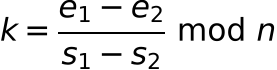
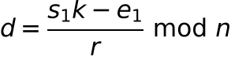
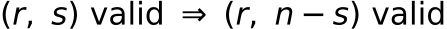

ECDSA is secure when every detail is right. Almost every real-world break of ECDSA came from an implementation mistake, not from the math. These are the classic ones.
If the same k signs two different messages, both signatures share the same R, so the same r. Writing the two signing equations and subtracting them leaves only one unknown:

and once k is known, the private key follows from the first signature:

Toy-17 example: d = 7, k = 10 (so r = 7), hashes e1 = 26 and e2 = 13 give s1 = 17 and s2 = 10. An attacker computes k = 13 / 7 = 13·11 = 10 mod 19, then d = (17·10 − 26) / 7 = 11·11 = 7 mod 19. The private key is recovered from two public signatures. Try it on the Attack Demo page.
k does not have to repeat to be dangerous. If an attacker can predict k, one signature gives away d. If k is only slightly biased (for example its top few bits are often zero), collecting many signatures lets lattice techniques (the "hidden number problem") recover d.
In 2013 a flaw in Android's random number generator made some Bitcoin wallet apps produce repeated k values, and funds were stolen from those wallets.
Fix weak or biased nonce generation: use RFC 6979. It derives k deterministically from the private key and message hash with HMAC. The same key and message produce the same k; for different messages, the HMAC-derived values are computationally unpredictable. No random number generator is needed at signing time. Our Sign page uses RFC 6979 by default.
If the time taken to compute k·G depends on the bits of k (for example, an extra point addition for every 1 bit, or a shorter loop when k has leading zeros), an attacker who can time many signatures learns partial information about each k. That partial information is exactly the bias from pitfall 2, and it leads to the same lattice attack. Real examples include the Minerva and TPM-FAIL attacks (2019) on smart cards and TPM chips.
Because the verifier only looks at the x-coordinate of X, and the points R and −R share the same x-coordinate, flipping the sign of s gives a second valid signature:

Anyone can do this without the private key. It doesn't let an attacker sign new messages, but it breaks systems that use the signature bytes as an identifier. Bitcoin had this problem with transaction IDs, which is why Bitcoin nodes now only relay transactions with "low-s" signatures (s ≤ n/2).